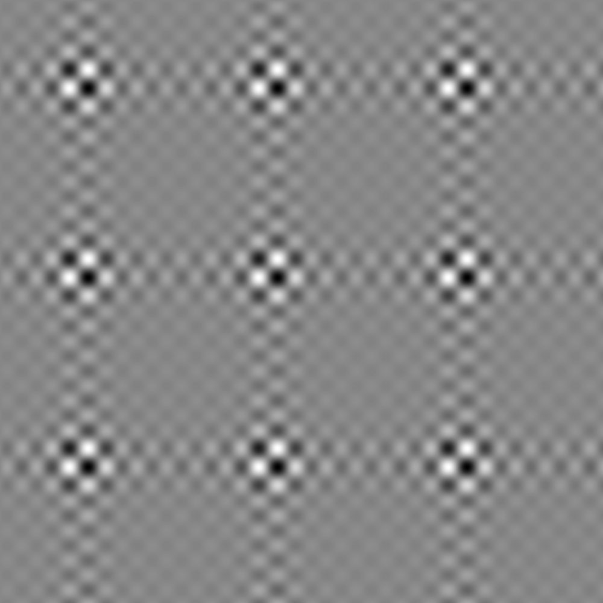
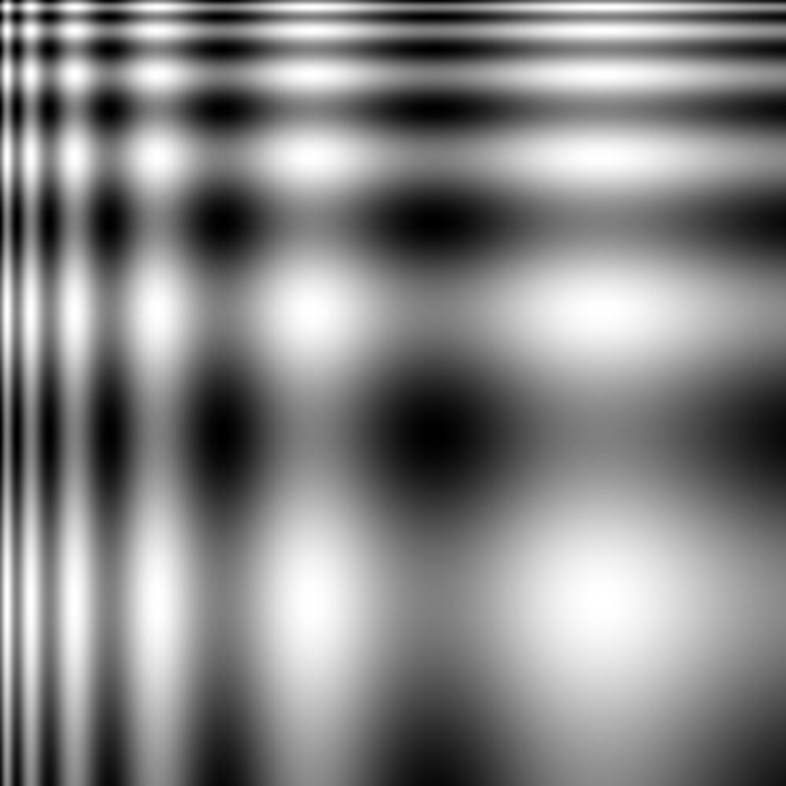
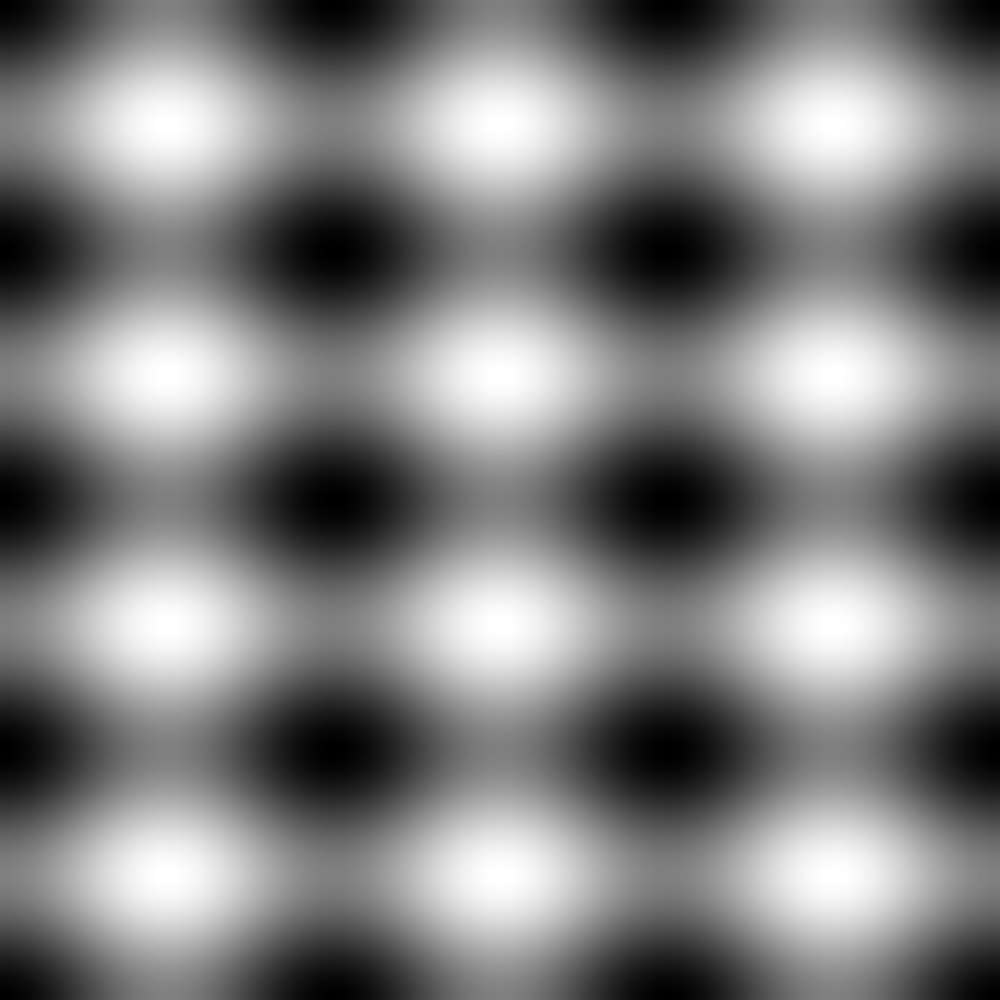
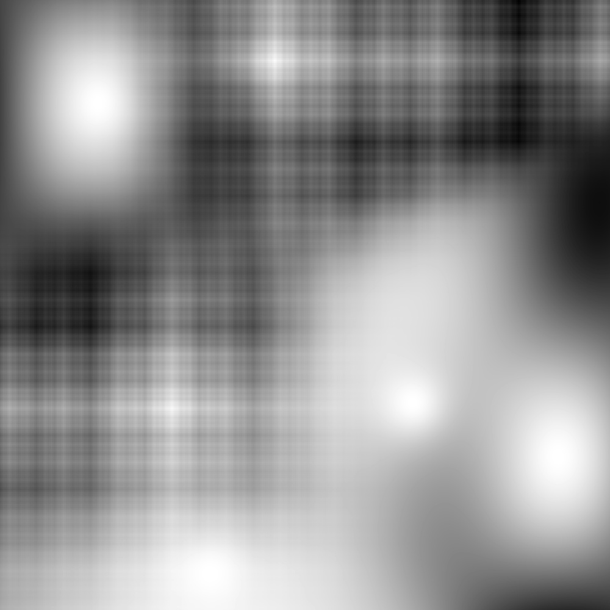
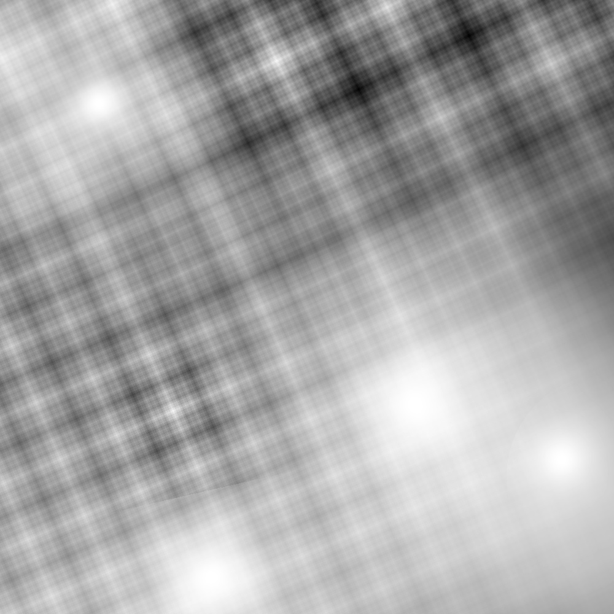

Artificial Intelligence for Modeling and Predicting Colorectal Cancer Tumor Progression
Settings
CRP-IRL Reward Map Selection
Reward Map:
NORMAL
DMMR
DMMR 2
PMMR 7
PMMR 10
PMMR 11
PMMR 12
PMMR 13
DMMR + Mayo treatment
nick
Tumor Phylogenetic Tree Selection
Subclonal reconstruction method:
PHYLOWGS
SPRUCE
SR4
SR5
Mutation rate:
0.1
0.01
0.001
0.0001
Tumor subpopulation #:
2
4
8
16
Fine-grain subclonal reconstruction?
Visualization options
Display subclone paths?
Indicate starting state?
Indicate final state?
Number of subclone paths to visualize:
1
2
3
4
5
6
7
8
9
10
Z separation:
Visualize Tumor Progression Map
Visualization of Tumor Progression Reward Map
    